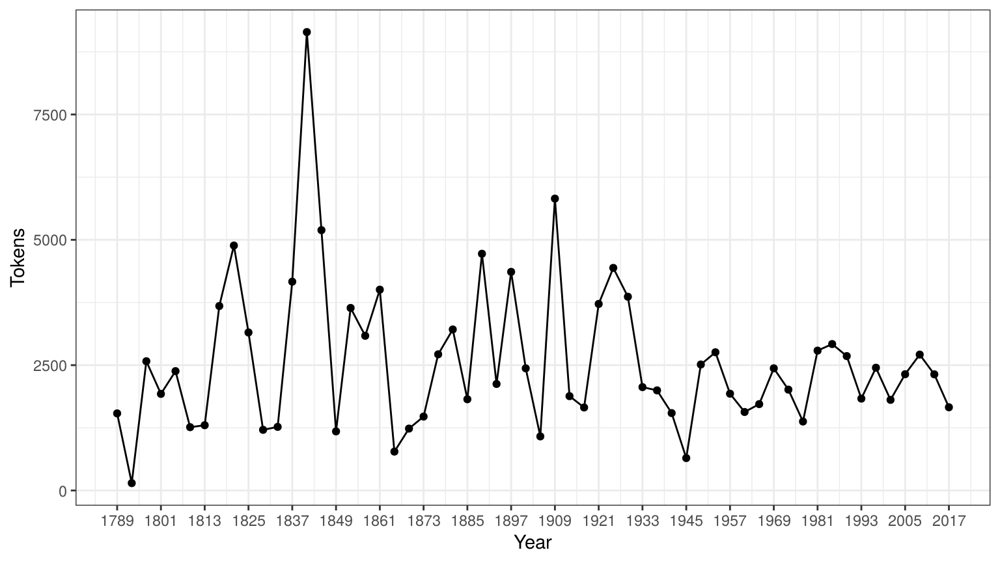

quickstart_ja.Rmd本ページはQuic Start Guideの日本語訳であり，英語のテキスト分析を通じてquantedaの基本的な使い方を説明する．日本語の分析法に関しては，以下のページを参照．
quantedaはCRANからインストールできる．GUIのRパッケージインストーラを使用してインストールするか，次のコマンドを実行する．
install.packages("quanteda") GitHubから最新の開発バージョンをインストールする方法については，https://github.com/quanteda/quanteda を参照．
quantedaには連携して機能を拡張する一連のパッケージがあり，それらをインストールすることが推奨される．
quanteda.corpora：quantedaの本記事内の説明で使用する追加のテキストデータ
devtools::install_github("quanteda/quanteda.corpora")LIWCalike: Linguistic Inquiry and Word Count (LIWC) アプローチによるテキスト分析のR実装
devtools::install_github("kbenoit/LIWCalike")まず，quantedaを読み込んで，パッケージの関数とデータにアクセスできるようにする．
library(quanteda)quantedaにはテキストを読み込むためのシンプルで強力なパッケージ，readtextがあります．このパッケージのreadtext()は，ローカス・ストレージやインターネットからファイル読み込み，corpus()にデータ・フレームを返す．
readtext()で利用可能なファイルやデータの形式:
.txt）ファイル.csv）ファイルquantedaのコーパスを生成する関数である corpus()は，以下の種類のデータを読み込むことができる．
VCorpusコーパスオブジェクトコーパスを作成する最も簡単な方法は，corpus()を用いて，すでにRに読み込まれた文字列ベクトル作成することである．文字列ベクトルをRに取り込む方法はさまざまなので，高度なRユーザーは，コーパスをいろいろな方法で作り出せる．
次の例では，quantedaパッケージに含まれているイギリスの政党が2010年の総選挙のために発行したマニフェストのテキストデータ（data_char_ukimmig2010）からコーパスを作成している．
my_corpus <- corpus(data_char_ukimmig2010) # テキストからコーパスを作成
summary(my_corpus)## Corpus consisting of 9 documents:
##
## Text Types Tokens Sentences
## BNP 1125 3280 88
## Coalition 142 260 4
## Conservative 251 499 15
## Greens 322 679 21
## Labour 298 683 29
## LibDem 251 483 14
## PC 77 114 5
## SNP 88 134 4
## UKIP 346 723 27
##
## Source: /home/kohei/packages/quanteda/vignettes/pkgdown/* on x86_64 by kohei
## Created: Tue Jun 5 10:29:14 2018
## Notes:コーパスを作成したあとでも，docvarsを用いると，必要に応じて文書に対応した変数をこのコーパスに追加することができる．
たとえば，Rのnames()関数を使って文字ベクトル（data_char_ukimmig2010）の名前を取得し，これを文書変数（docvar()）に追加することができる．
docvars(my_corpus, "Party") <- names(data_char_ukimmig2010)
docvars(my_corpus, "Year") <- 2010
summary(my_corpus)## Corpus consisting of 9 documents:
##
## Text Types Tokens Sentences Party Year
## BNP 1125 3280 88 BNP 2010
## Coalition 142 260 4 Coalition 2010
## Conservative 251 499 15 Conservative 2010
## Greens 322 679 21 Greens 2010
## Labour 298 683 29 Labour 2010
## LibDem 251 483 14 LibDem 2010
## PC 77 114 5 PC 2010
## SNP 88 134 4 SNP 2010
## UKIP 346 723 27 UKIP 2010
##
## Source: /home/kohei/packages/quanteda/vignettes/pkgdown/* on x86_64 by kohei
## Created: Tue Jun 5 10:29:14 2018
## Notes:分析の対象となる文書変数ではではないけれども，文書の属性として残しておきたいと思うメタデータも，docvars()を使って，コーパスに追加することができる．
metadoc(my_corpus, "language") <- "english"
metadoc(my_corpus, "docsource") <- paste("data_char_ukimmig2010", 1:ndoc(my_corpus), sep = "_")
summary(my_corpus, showmeta = TRUE)## Corpus consisting of 9 documents:
##
## Text Types Tokens Sentences _language _docsource
## BNP 1125 3280 88 english data_char_ukimmig2010_1
## Coalition 142 260 4 english data_char_ukimmig2010_2
## Conservative 251 499 15 english data_char_ukimmig2010_3
## Greens 322 679 21 english data_char_ukimmig2010_4
## Labour 298 683 29 english data_char_ukimmig2010_5
## LibDem 251 483 14 english data_char_ukimmig2010_6
## PC 77 114 5 english data_char_ukimmig2010_7
## SNP 88 134 4 english data_char_ukimmig2010_8
## UKIP 346 723 27 english data_char_ukimmig2010_9
## Party Year
## BNP 2010
## Coalition 2010
## Conservative 2010
## Greens 2010
## Labour 2010
## LibDem 2010
## PC 2010
## SNP 2010
## UKIP 2010
##
## Source: /home/kohei/packages/quanteda/vignettes/pkgdown/* on x86_64 by kohei
## Created: Tue Jun 5 10:29:14 2018
## Notes:metadoc()を用いると，文書メタデータのフィールドを自由に定義することができますが，単一の値（“english”）を文書変数（“language”）に付与するときには，Rが値を繰り替えして全ての文書に同じ値を付与していることに注意する必要がある．
独自の文書メタデータのフィールド（docsource）を作成するために，quantedaの関数であるndoc()を使ってコーパスに含まれる文書の総数を取得している．ndoc()は，nrow()やncol()などのRの標準の関数と同じような方法で動作するように設計されている．
require(readtext)
# Twitter json
mytf1 <- readtext("~/Dropbox/QUANTESS/social media/zombies/tweets.json")
my_corpusTwitter <- corpus(mytf1)
summary(my_corpusTwitter, 5)
# generic json - needs a textfield specifier
mytf2 <- readtext("~/Dropbox/QUANTESS/Manuscripts/collocations/Corpora/sotu/sotu.json",
textfield = "text")
summary(corpus(mytf2), 5)
# text file
mytf3 <- readtext("~/Dropbox/QUANTESS/corpora/project_gutenberg/pg2701.txt", cache = FALSE)
summary(corpus(mytf3), 5)
# multiple text files
mytf4 <- readtext("~/Dropbox/QUANTESS/corpora/inaugural/*.txt", cache = FALSE)
summary(corpus(mytf4), 5)
# multiple text files with docvars from filenames
mytf5 <- readtext("~/Dropbox/QUANTESS/corpora/inaugural/*.txt",
docvarsfrom = "filenames", sep = "-", docvarnames = c("Year", "President"))
summary(corpus(mytf5), 5)
# XML data
mytf6 <- readtext("~/Dropbox/QUANTESS/quanteda_working_files/xmlData/plant_catalog.xml",
textfield = "COMMON")
summary(corpus(mytf6), 5)
# csv file
write.csv(data.frame(inaugSpeech = texts(data_corpus_inaugural),
docvars(data_corpus_inaugural)),
file = "/tmp/inaug_texts.csv", row.names = FALSE)
mytf7 <- readtext("/tmp/inaug_texts.csv", textfield = "inaugSpeech")
summary(corpus(mytf7), 5)quantedaのコーパスは，元の文書をユニコード（UTF-8）に変換し，文書に対するメタデータと一緒に格納しすることで、ステミングや句読点の削除などの処理よって変更されないテキストデータの静的な保管庫になるように設計されている．これによって，コーパスから文書を抽出して新しいオブジェクトを作成した後でも，コーパスには元のデータが残り，別の分析を，同じコーパスを用いて行うことができる．
コーパスから文書を取り出すためには，texts()と呼ばれる関数を使用する．
texts(data_corpus_inaugural)[2]## 1793-Washington
## "Fellow citizens, I am again called upon by the voice of my country to execute the functions of its Chief Magistrate. When the occasion proper for it shall arrive, I shall endeavor to express the high sense I entertain of this distinguished honor, and of the confidence which has been reposed in me by the people of united America.\n\nPrevious to the execution of any official act of the President the Constitution requires an oath of office. This oath I am now about to take, and in your presence: That if it shall be found during my administration of the Government I have in any instance violated willingly or knowingly the injunctions thereof, I may (besides incurring constitutional punishment) be subject to the upbraidings of all who are now witnesses of the present solemn ceremony.\n\n "summary()により，コーパス内のテキストの要約を行うことができる．
summary(data_corpus_irishbudget2010)## Corpus consisting of 14 documents:
##
## Text Types Tokens Sentences year debate
## 2010_BUDGET_01_Brian_Lenihan_FF 1953 8641 374 2010 BUDGET
## 2010_BUDGET_02_Richard_Bruton_FG 1040 4446 217 2010 BUDGET
## 2010_BUDGET_03_Joan_Burton_LAB 1624 6393 307 2010 BUDGET
## 2010_BUDGET_04_Arthur_Morgan_SF 1595 7107 343 2010 BUDGET
## 2010_BUDGET_05_Brian_Cowen_FF 1629 6599 250 2010 BUDGET
## 2010_BUDGET_06_Enda_Kenny_FG 1148 4232 153 2010 BUDGET
## 2010_BUDGET_07_Kieran_ODonnell_FG 678 2297 133 2010 BUDGET
## 2010_BUDGET_08_Eamon_Gilmore_LAB 1181 4177 201 2010 BUDGET
## 2010_BUDGET_09_Michael_Higgins_LAB 488 1286 44 2010 BUDGET
## 2010_BUDGET_10_Ruairi_Quinn_LAB 439 1284 59 2010 BUDGET
## 2010_BUDGET_11_John_Gormley_Green 401 1030 49 2010 BUDGET
## 2010_BUDGET_12_Eamon_Ryan_Green 510 1643 90 2010 BUDGET
## 2010_BUDGET_13_Ciaran_Cuffe_Green 442 1240 45 2010 BUDGET
## 2010_BUDGET_14_Caoimhghin_OCaolain_SF 1188 4044 176 2010 BUDGET
## number foren name party
## 01 Brian Lenihan FF
## 02 Richard Bruton FG
## 03 Joan Burton LAB
## 04 Arthur Morgan SF
## 05 Brian Cowen FF
## 06 Enda Kenny FG
## 07 Kieran ODonnell FG
## 08 Eamon Gilmore LAB
## 09 Michael Higgins LAB
## 10 Ruairi Quinn LAB
## 11 John Gormley Green
## 12 Eamon Ryan Green
## 13 Ciaran Cuffe Green
## 14 Caoimhghin OCaolain SF
##
## Source: /Users/kbenoit/Dropbox (Personal)/GitHub/quanteda/* on x86_64 by kbenoit
## Created: Wed Jun 28 22:04:18 2017
## Notes:summary()の出力をデータ・フレームとして保存し，基本的な記述統計を描画することができる．
tokenInfo <- summary(data_corpus_inaugural)
if (require(ggplot2))
ggplot(data = tokenInfo, aes(x = Year, y = Tokens, group = 1)) + geom_line() + geom_point() +
scale_x_continuous(labels = c(seq(1789, 2017, 12)), breaks = seq(1789, 2017, 12)) +
theme_bw()## Loading required package: ggplot2
# Longest inaugural address: William Henry Harrison
tokenInfo[which.max(tokenInfo$Tokens), ] ## Text Types Tokens Sentences Year President FirstName
## 14 1841-Harrison 1896 9144 210 1841 Harrison William Henry+演算子を用いると，簡単に二個のコーパスを連結できます．コーパスが異なる構造を持つ場合でも，文書変数が失われることはなく，コーパスのメタデータも引き継がれる．
library(quanteda)
my_corpus1 <- corpus(data_corpus_inaugural[1:5])
my_corpus2 <- corpus(data_corpus_inaugural[53:58])
my_corpus3 <- my_corpus1 + my_corpus2
summary(my_corpus3)## Corpus consisting of 11 documents:
##
## Text Types Tokens Sentences
## 1789-Washington 625 1538 23
## 1793-Washington 96 147 4
## 1797-Adams 826 2578 37
## 1801-Jefferson 717 1927 41
## 1805-Jefferson 804 2381 45
## 1997-Clinton 773 2449 111
## 2001-Bush 621 1808 97
## 2005-Bush 773 2319 100
## 2009-Obama 938 2711 110
## 2013-Obama 814 2317 88
## 2017-Trump 582 1660 88
##
## Source: Combination of corpuses my_corpus1 and my_corpus2
## Created: Tue Jun 5 10:29:16 2018
## Notes:corpus_subset()により，文書変数に適用される論理条件に基づいて文書を抽出することができる．
summary(corpus_subset(data_corpus_inaugural, Year > 1990))## Corpus consisting of 7 documents:
##
## Text Types Tokens Sentences Year President FirstName
## 1993-Clinton 642 1833 81 1993 Clinton Bill
## 1997-Clinton 773 2449 111 1997 Clinton Bill
## 2001-Bush 621 1808 97 2001 Bush George W.
## 2005-Bush 773 2319 100 2005 Bush George W.
## 2009-Obama 938 2711 110 2009 Obama Barack
## 2013-Obama 814 2317 88 2013 Obama Barack
## 2017-Trump 582 1660 88 2017 Trump Donald J.
##
## Source: Gerhard Peters and John T. Woolley. The American Presidency Project.
## Created: Tue Jun 13 14:51:47 2017
## Notes: http://www.presidency.ucsb.edu/inaugurals.phpsummary(corpus_subset(data_corpus_inaugural, President == "Adams"))## Corpus consisting of 2 documents:
##
## Text Types Tokens Sentences Year President FirstName
## 1797-Adams 826 2578 37 1797 Adams John
## 1825-Adams 1003 3152 74 1825 Adams John Quincy
##
## Source: Gerhard Peters and John T. Woolley. The American Presidency Project.
## Created: Tue Jun 13 14:51:47 2017
## Notes: http://www.presidency.ucsb.edu/inaugurals.phpkwic()（keywords-in-context）は単語の検索を行い，その単語が現れる文脈を表示する．
kwic(data_corpus_inaugural, "terror")##
## [1797-Adams, 1325] fraud or violence, by | terror |
## [1933-Roosevelt, 112] nameless, unreasoning, unjustified | terror |
## [1941-Roosevelt, 287] seemed frozen by a fatalistic | terror |
## [1961-Kennedy, 866] alter that uncertain balance of | terror |
## [1981-Reagan, 813] freeing all Americans from the | terror |
## [1997-Clinton, 1055] They fuel the fanaticism of | terror |
## [1997-Clinton, 1655] maintain a strong defense against | terror |
## [2009-Obama, 1632] advance their aims by inducing | terror |
##
## , intrigue, or venality
## which paralyzes needed efforts to
## , we proved that this
## that stays the hand of
## of runaway living costs.
## . And they torment the
## and destruction. Our children
## and slaughtering innocents, wekwic(data_corpus_inaugural, "terror", valuetype = "regex")##
## [1797-Adams, 1325] fraud or violence, by | terror
## [1933-Roosevelt, 112] nameless, unreasoning, unjustified | terror
## [1941-Roosevelt, 287] seemed frozen by a fatalistic | terror
## [1961-Kennedy, 866] alter that uncertain balance of | terror
## [1961-Kennedy, 990] of science instead of its | terrors
## [1981-Reagan, 813] freeing all Americans from the | terror
## [1981-Reagan, 2196] understood by those who practice | terrorism
## [1997-Clinton, 1055] They fuel the fanaticism of | terror
## [1997-Clinton, 1655] maintain a strong defense against | terror
## [2009-Obama, 1632] advance their aims by inducing | terror
## [2017-Trump, 1117] civilized world against radical Islamic | terrorism
##
## | , intrigue, or venality
## | which paralyzes needed efforts to
## | , we proved that this
## | that stays the hand of
## | . Together let us explore
## | of runaway living costs.
## | and prey upon their neighbors
## | . And they torment the
## | and destruction. Our children
## | and slaughtering innocents, we
## | , which we will eradicatekwic(data_corpus_inaugural, "communist*")##
## [1949-Truman, 834] the actions resulting from the | Communist |
## [1961-Kennedy, 519] -- not because the | Communists |
##
## philosophy are a threat to
## may be doing it,上記の要約では，“Year”と“President”は各文書に結び付けられた変数であり，docvars()によってそれらにアクセスできる．
head(docvars(data_corpus_inaugural))## Year President FirstName
## 1789-Washington 1789 Washington George
## 1793-Washington 1793 Washington George
## 1797-Adams 1797 Adams John
## 1801-Jefferson 1801 Jefferson Thomas
## 1805-Jefferson 1805 Jefferson Thomas
## 1809-Madison 1809 Madison Jamesquanteda.corporaをインストールすることで，より多くのコーパスを試すことができる．
文書のスケーリングなどの統計分析を行うためには，それぞれの文書の特長をまとめた行列を作成する必要があり，quantedaでは，このような行列を生成するために dfm()を使いる． dfmはdocument-feature matrixの略で，行が文書（document），列が特長（feature）となる行列である．行と列をこのように定義する理由は，データ分析では行が分析単位になり，各列が分析対象になる変数となるのが一般的だからである．多くのソフトウェアでは，この行列をdocument-term matrixと呼ぶが，quantedaが語（term）でなはく特長（feature）という用語を使うのは，特長のほうが一般性を持つからで，テキスト分析では，単語，語幹，単語の集合，Nグラム，品詞など様々なものが文書の特長となる．
テキストを簡単にトークン化するために，quantedaは tokens()と呼ばれる強力なコマンドを提供する．この関数は，文字ベクトルのトークンのリストからなるオブジェクトを生成する．このオブジェクトでは，リストの一つ一つの要素は入力された文書に対応している．
tokens()は保守的に設計されており、ユーザーが明示的に指示を与えないかぎりは，要素を削除しない．
txt <- c(text1 = "This is $10 in 999 different ways,\n up and down; left and right!",
text2 = "@kenbenoit working: on #quanteda 2day\t4ever, http://textasdata.com?page=123.")
tokens(txt)## tokens from 2 documents.
## text1 :
## [1] "This" "is" "$" "10" "in"
## [6] "999" "different" "ways" "," "up"
## [11] "and" "down" ";" "left" "and"
## [16] "right" "!"
##
## text2 :
## [1] "@kenbenoit" "working" ":" "on"
## [5] "#quanteda" "2day" "4ever" ","
## [9] "http" ":" "/" "/"
## [13] "textasdata.com" "?" "page" "="
## [17] "123" "."tokens(txt, remove_numbers = TRUE, remove_punct = TRUE)## tokens from 2 documents.
## text1 :
## [1] "This" "is" "in" "different" "ways"
## [6] "up" "and" "down" "left" "and"
## [11] "right"
##
## text2 :
## [1] "@kenbenoit" "working" "on" "#quanteda"
## [5] "2day" "4ever" "http" "textasdata.com"
## [9] "page"tokens(txt, remove_numbers = FALSE, remove_punct = TRUE)## tokens from 2 documents.
## text1 :
## [1] "This" "is" "10" "in" "999"
## [6] "different" "ways" "up" "and" "down"
## [11] "left" "and" "right"
##
## text2 :
## [1] "@kenbenoit" "working" "on" "#quanteda"
## [5] "2day" "4ever" "http" "textasdata.com"
## [9] "page" "123"tokens(txt, remove_numbers = TRUE, remove_punct = FALSE)## tokens from 2 documents.
## text1 :
## [1] "This" "is" "$" "in" "different"
## [6] "ways" "," "up" "and" "down"
## [11] ";" "left" "and" "right" "!"
##
## text2 :
## [1] "@kenbenoit" "working" ":" "on"
## [5] "#quanteda" "2day" "4ever" ","
## [9] "http" ":" "/" "/"
## [13] "textasdata.com" "?" "page" "="
## [17] "."tokens(txt, remove_numbers = FALSE, remove_punct = FALSE)## tokens from 2 documents.
## text1 :
## [1] "This" "is" "$" "10" "in"
## [6] "999" "different" "ways" "," "up"
## [11] "and" "down" ";" "left" "and"
## [16] "right" "!"
##
## text2 :
## [1] "@kenbenoit" "working" ":" "on"
## [5] "#quanteda" "2day" "4ever" ","
## [9] "http" ":" "/" "/"
## [13] "textasdata.com" "?" "page" "="
## [17] "123" "."tokens(txt, remove_numbers = FALSE, remove_punct = FALSE, remove_separators = FALSE)## tokens from 2 documents.
## text1 :
## [1] "This" " " "is" " " "$"
## [6] "10" " " "in" " " "999"
## [11] " " "different" " " "ways" ","
## [16] "\n" " " "up" " " "and"
## [21] " " "down" ";" " " "left"
## [26] " " "and" " " "right" "!"
##
## text2 :
## [1] "@kenbenoit" " " "working" ":"
## [5] " " "on" " " "#quanteda"
## [9] " " "2day" "\t" "4ever"
## [13] "," " " "http" ":"
## [17] "/" "/" "textasdata.com" "?"
## [21] "page" "=" "123" "."また，tokens()には個々の文字をトークン化するオプションもある．
tokens("Great website: http://textasdata.com?page=123.", what = "character")## tokens from 1 document.
## text1 :
## [1] "G" "r" "e" "a" "t" "w" "e" "b" "s" "i" "t" "e" ":" "h" "t" "t" "p"
## [18] ":" "/" "/" "t" "e" "x" "t" "a" "s" "d" "a" "t" "a" "." "c" "o" "m"
## [35] "?" "p" "a" "g" "e" "=" "1" "2" "3" "."tokens("Great website: http://textasdata.com?page=123.", what = "character",
remove_separators = FALSE)## tokens from 1 document.
## text1 :
## [1] "G" "r" "e" "a" "t" " " "w" "e" "b" "s" "i" "t" "e" ":" " " "h" "t"
## [18] "t" "p" ":" "/" "/" "t" "e" "x" "t" "a" "s" "d" "a" "t" "a" "." "c"
## [35] "o" "m" "?" "p" "a" "g" "e" "=" "1" "2" "3" "."もしくは，一文ごとにトークン化するオプションもある．
# sentence level
tokens(c("Kurt Vongeut said; only assholes use semi-colons.",
"Today is Thursday in Canberra: It is yesterday in London.",
"En el caso de que no puedas ir con ellos, ¿quieres ir con nosotros?"),
what = "sentence")## tokens from 3 documents.
## text1 :
## [1] "Kurt Vongeut said; only assholes use semi-colons."
##
## text2 :
## [1] "Today is Thursday in Canberra: It is yesterday in London."
##
## text3 :
## [1] "En el caso de que no puedas ir con ellos, ¿quieres ir con nosotros?"データからすぐに文書行列を作成したい場合は、dfm()に直接文字列ベクトルもしくはコーパスを渡すと、自動的にトークン化が行われ。dfm()は、デフォルトで大文字から小文字への置換や，句読点を除去などの操作を適用する．また，dfm()からtokens()の全てのオプションを利用できる．
my_corpus <- corpus_subset(data_corpus_inaugural, Year > 1990)
my_dfm <- dfm(my_corpus)
my_dfm[, 1:5]## Document-feature matrix of: 7 documents, 5 features (0% sparse).
## 7 x 5 sparse Matrix of class "dfm"
## features
## docs my fellow citizens , today
## 1993-Clinton 7 5 2 139 10
## 1997-Clinton 6 7 7 131 5
## 2001-Bush 3 1 9 110 2
## 2005-Bush 2 3 6 120 3
## 2009-Obama 2 1 1 130 6
## 2013-Obama 3 3 6 99 4
## 2017-Trump 1 1 4 96 4以下の例ではdfm()の追加のオプションを用いて、ストップワードの削除（remove）と語のステミング（stem）を行っている．
myStemMat <- dfm(my_corpus, remove = stopwords("english"),
stem = TRUE, remove_punct = TRUE)
myStemMat[, 1:5]## Document-feature matrix of: 7 documents, 5 features (17.1% sparse).
## 7 x 5 sparse Matrix of class "dfm"
## features
## docs fellow citizen today celebr mysteri
## 1993-Clinton 5 2 10 4 1
## 1997-Clinton 7 8 6 1 0
## 2001-Bush 1 10 2 0 0
## 2005-Bush 3 7 3 2 0
## 2009-Obama 1 1 6 2 0
## 2013-Obama 3 8 6 1 0
## 2017-Trump 1 4 5 3 1removeによって，文書行列から除外するトークンを指定する．stopwords()は，幾つかの言語で定義されたストップワードのリストを返す．
head(stopwords("english"), 20)## [1] "i" "me" "my" "myself" "we"
## [6] "our" "ours" "ourselves" "you" "your"
## [11] "yours" "yourself" "yourselves" "he" "him"
## [16] "his" "himself" "she" "her" "hers"head(stopwords("russian"), 10)## [1] "и" "в" "во" "не" "что" "он" "на" "я" "с" "со"head(stopwords("arabic"), 10)## Warning: 'stopwords(language = "ar")' is deprecated.
## Use 'stopwords(language = "ar", source = "misc")' instead.
## See help("Deprecated")## [1] "فى" "في" "كل" "لم" "لن" "له" "من" "هو" "هي" "قوة"RStudioの“Environment”パネル，またはRのView()を用いることで，dfmに格納された値を見ることができる．
## Document-feature matrix of: 9 documents, 1,547 features (83.8% sparse).頻度が最も高い特長を見るには，topfeatures()を用いる．
topfeatures(my_dfm, 20) # 20 top words## immigration british people asylum britain uk
## 66 37 35 29 28 27
## system population country new immigrants ensure
## 27 21 20 19 17 17
## shall citizenship social national bnp illegal
## 17 16 14 14 13 13
## work percent
## 13 12dfmをtextplot_wordcloud()に渡すことで，ワードクラウドを描画できる．この関数は，オブジェクトや引数をwordcloudパッケージのwordcloud()に渡すので，ワードクラウドの表示を変更できる．
set.seed(100)
textplot_wordcloud(my_dfm, min_count = 6, random_order = FALSE,
rotation = .25,
color = RColorBrewer::brewer.pal(8,"Dark2"))quantedaでは，dfmを作成する際に，文書変数の値によって文書をグループ化するすることができる．
by_party_dfm <- dfm(data_corpus_irishbudget2010, groups = "party",
remove = stopwords("english"), remove_punct = TRUE)また、以下のように，dfmを語の頻度順に並べ替えて，中身を確かめられる．
dfm_sort(by_party_dfm)[, 1:10]## Document-feature matrix of: 5 documents, 10 features (0% sparse).
## 5 x 10 sparse Matrix of class "dfm"
## features
## docs people budget government public minister tax economy pay jobs
## FF 23 44 47 65 11 60 37 41 41
## FG 78 71 61 47 62 11 20 29 17
## Green 15 26 19 4 4 11 16 4 15
## LAB 69 66 36 32 54 47 37 24 20
## SF 81 53 73 31 39 34 50 24 27
## features
## docs billion
## FF 32
## FG 21
## Green 3
## LAB 34
## SF 29キーワードがあらかじめ分かっている場合，dictionary()によって辞書を作成し、語の出現回数を測定できる。次の例では，テロリズムに関連する言葉や経済に関連する言葉が，クリントン以降の大統領演説でどのように異なるかを示している．
recentCorpus <- corpus_subset(data_corpus_inaugural, Year > 1991)テロリズムと経済という2つのリストからなる辞書を作成する．
myDict <- dictionary(list(terror = c("terrorism", "terrorists", "threat"),
economy = c("jobs", "business", "grow", "work")))文書行列を作成するときに，この辞書をdfm()のdictionaryに渡す．
byPresMat <- dfm(recentCorpus, dictionary = myDict)
byPresMat## Document-feature matrix of: 7 documents, 2 features (14.3% sparse).
## 7 x 2 sparse Matrix of class "dfm"
## features
## docs terror economy
## 1993-Clinton 0 8
## 1997-Clinton 1 8
## 2001-Bush 0 4
## 2005-Bush 1 6
## 2009-Obama 1 10
## 2013-Obama 1 6
## 2017-Trump 1 5dictionary()は，LIWCやWordstatなどの一般的な辞書ファイルを読み込むことができる．以下では，LIWCの辞書を大統領就任演説に適用している．
liwcdict <- dictionary(file = "~/Dropbox/QUANTESS/dictionaries/LIWC/LIWC2001_English.dic",
format = "LIWC")
liwcdfm <- dfm(data_corpus_inaugural[52:58], dictionary = liwcdict)
liwcdfm[, 1:10]pres_dfm <- dfm(corpus_subset(data_corpus_inaugural, Year > 1980),
remove = stopwords("english"), stem = TRUE, remove_punct = TRUE)
obama_simil <- textstat_simil(pres_dfm, c("2009-Obama" , "2013-Obama"),
margin = "documents", method = "cosine")
obama_simil## 2009-Obama 2013-Obama
## 1981-Reagan 0.6229949 0.6376412
## 1985-Reagan 0.6434472 0.6629428
## 1989-Bush 0.6253944 0.5784290
## 1993-Clinton 0.6280946 0.6265428
## 1997-Clinton 0.6593018 0.6466030
## 2001-Bush 0.6018113 0.6193608
## 2005-Bush 0.5266249 0.5867178
## 2009-Obama 1.0000000 0.6815711
## 2013-Obama 0.6815711 1.0000000
## 2017-Trump 0.5192075 0.5160104# dotchart(as.list(obama_simil)$"2009-Obama", xlab = "Cosine similarity")上記の文書間の類似性から樹形図を作成して，大統領を階層的に分類することができる．
data(data_corpus_sotu, package = "quanteda.corpora")
pres_dfm <- dfm(corpus_subset(data_corpus_sotu, Date > as.Date("1980-01-01")),
stem = TRUE, remove_punct = TRUE,
remove = stopwords("english"))
pres_dfm <- dfm_trim(pres_dfm, min_count = 5, min_docfreq = 3)
# hierarchical clustering - get distances on normalized dfm
pres_dist_mat <- textstat_dist(dfm_weight(pres_dfm, "prop"))
# hiarchical clustering the distance object
pres_cluster <- hclust(pres_dist_mat)
# label with document names
pres_cluster$labels <- docnames(pres_dfm)
# plot as a dendrogram
plot(pres_cluster, xlab = "", sub = "", main = "Euclidean Distance on Normalized Token Frequency")文書間と同様に用語間の類似性も測定できる．
sim <- textstat_simil(pres_dfm, c("fair", "health", "terror"), method = "cosine", margin = "features")
lapply(as.list(sim), head, 10)## $fair
## economi begin jefferson author faith call struggl
## 0.9080252 0.9075951 0.8981462 0.8944272 0.8866586 0.8608285 0.8451543
## best creat courag
## 0.8366600 0.8347300 0.8326664
##
## $health
## shape generat wrong common knowledg planet task
## 0.9045340 0.8971180 0.8944272 0.8888889 0.8888889 0.8819171 0.8728716
## demand eye defin
## 0.8666667 0.8660254 0.8642416
##
## $terror
## potenti adversari commonplac miracl racial bounti
## 0.9036961 0.9036961 0.8944272 0.8944272 0.8944272 0.8944272
## martin dream polit guarante
## 0.8944272 0.8624394 0.8500000 0.8485281quantedaには多数のテキスト分析のためのモデルが含まれている．ここでは，ワードフィッシュ（textmodel_wordfish()）による教師なしの文書のスケーリングを2010年のアイルランドの予算討論の分析に用いている．
ie_dfm <- dfm(data_corpus_irishbudget2010)
textmodel_wordfish(ie_dfm, dir = c(2, 1))##
## Call:
## textmodel_wordfish.dfm(x = ie_dfm, dir = c(2, 1))
##
## Dispersion: poisson; direction: 2 < 1; 14 documents; 5140 features.convert()を用いると，dfmをtopicmodelsのLDA()形式のデータに転換し，簡単にトピックモデルを適用できる．
quant_dfm <- dfm(data_corpus_irishbudget2010,
remove_punct = TRUE, remove_numbers = TRUE, remove = stopwords("english"))
quant_dfm <- dfm_trim(quant_dfm, min_termfreq = 4, max_docfreq = 10)
quant_dfm## Document-feature matrix of: 14 documents, 1,263 features (64.5% sparse).set.seed(100)
if (require(topicmodels)) {
my_lda_fit20 <- LDA(convert(quant_dfm, to = "topicmodels"), k = 20)
get_terms(my_lda_fit20, 5)
}## Loading required package: topicmodels## Topic 1 Topic 2 Topic 3 Topic 4 Topic 5 Topic 6
## [1,] "system" "million" "levy" "child" "taoiseach" "support"
## [2,] "fáil" "harsh" "important" "benefit" "fine" "million"
## [3,] "fianna" "price" "created" "day" "gael" "development"
## [4,] "welfare" "welfare" "homes" "bank" "may" "forward"
## [5,] "child" "carbon" "future" "today" "irish" "continue"
## Topic 7 Topic 8 Topic 9 Topic 10 Topic 11
## [1,] "welfare" "taoiseach" "society" "fianna" "welfare"
## [2,] "back" "employees" "equal" "child" "deficit"
## [3,] "confidence" "rate" "enterprising" "fáil" "system"
## [4,] "investment" "referred" "sense" "irish" "taxation"
## [5,] "energy" "problem" "nation" "knowledge" "taken"
## Topic 12 Topic 13 Topic 14 Topic 15 Topic 16 Topic 17
## [1,] "fianna" "investment" "care" "failed" "stated" "million"
## [2,] "fáil" "rate" "per" "strategy" "stimulus" "spending"
## [3,] "side" "measures" "allowance" "needed" "debate" "review"
## [4,] "level" "scheme" "welfare" "ministers" "taoiseach" "reduction"
## [5,] "third" "welfare" "million" "system" "welcome" "measures"
## Topic 18 Topic 19 Topic 20
## [1,] "kind" "fáil" "per"
## [2,] "imagination" "fianna" "fáil"
## [3,] "policies" "national" "benefit"
## [4,] "wit" "irish" "million"
## [5,] "create" "support" "child"